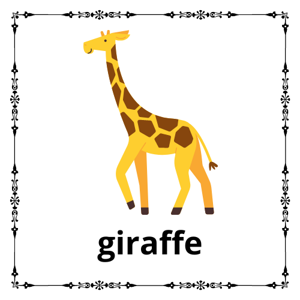

<!DOCTYPE html>
<html>
  <head>
	
	<!-- Include Artyom.js library -->
    <script src="artyom.window.js"></script>
<link rel="stylesheet" href="https://www.w3schools.com/w3css/4/w3.css">   
	  
<style>
 #robot {
  width: 50%; 
  height: auto; 
  max-width: 100%; 
}

	
</style>
  </head>
  <body class="w3-blue">
	
    
	</div>
	
	<div class="w3-container w3-padding">
    <div class="w3-card w3-border w3-white" id="response"></div>

    </div>

<script>
        var artyom = new Artyom();

        // Define the "How are you?" command
        artyom.addCommands({
            indexes: ["rabbit"],
            action: () => {
                
                   document.getElementById("response").innerHTML ='';
                   artyom.say("This is a rabbit"); 
				   }
        });

        // Define the "Good morning" command
        artyom.addCommands({
            indexes: ["giraffe"],
            action: () => {
                artyom.say("it's an giraffe");
                document.getElementById("response").innerHTML = '';
            }
        });
		
		
		
		artyom.addCommands({
    indexes: ["test"],
    action: () => {
        artyom.say("Testing, testing, one two three.");
    }
});

		

        // Start the Artyom instance with textToSpeech option enabled
        artyom.initialize({
            lang: "en-US",
            continuous: true,
            soundex: true,
            listen: true,
            textToSpeech: true,
            debug: true
        });
</script>
  </body>
</html>


